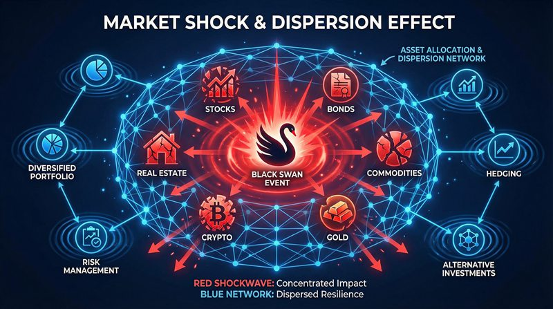

返回课程列表
第五课
能量方法
科幻电影中的能量核心与守恒定律
⏱️ 约40分钟
钢铁侠的方舟反应堆、星际穿越的引力弹弓、星球大战的死星——科幻电影中的能量设定是否符合物理定律？
科幻能源的物理分析
科幻电影中的能源装置往往基于真实物理概念的外推。方舟反应堆暗示冷核聚变，光剑暗示等离子体约束，曲速引擎暗示时空弯曲。

科幻能源的可行性分析
经典科幻能源的物理评估：
- 方舟反应堆：钯元素冷核聚变，现实中尚未实现，但热核聚变已在实验阶段
- 死星超级激光：摧毁行星需要约2.4×10³²焦耳能量，相当于太阳一周的能量输出
- 光剑：等离子体温度需达数万度，约束在剑形中需要极强磁场
- 曲速引擎：理论上需要负能量物质，目前物理学中尚未发现
引力弹弓与轨道能量
引力弹弓是利用行星引力加速飞船的技术，不违反能量守恒——飞船获得的能量来自行星的轨道能量，只是行星质量太大感觉不到。
太空旅行的能量策略
科幻电影中的轨道力学：
- 《星际穿越》：利用黑洞引力弹弓加速，理论上可接近光速
- 《火星救援》：赫尔墨斯号利用地球引力弹弓改变轨道
- 旅行者号：真实案例，利用木星引力弹弓加速到17km/s逃离太阳系
- 《阿凡达》：潘多拉星球距地球4.37光年，即使光速也需4年多